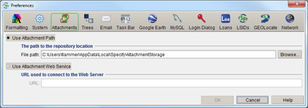

Attachments Preference
Use Attachment Path - Check this box when either storing attachments on a local drive or using a shared attachment repository on a network drive.
File Path - Attachments will be copied,
renamed and stored in this location. Only the path to the
attachments is stored in the Specify database. The Specify Setup
Wizard sets a default storage location on the local drive. This
does not allow attachments to be shared or viewed by other
users. To allow attachments to be shared it is recommended that
this storage area (attachment repository) be on a shared network
drive that all users have been given Read/Write/Delete
permissions to use. Once the storage location has been created
on the network drive all users must change this Attachment
Storage Location path in their system preferences. (Enter the
path for an attachment repository or click the browse button and
use the file system dialog to build the path.)
Note: Specify will create a directory called
'originals' to store the original files, and a directory named
'thumbnails' for the thumbnails it creates.
Use
Attachment Web Services - Check this box when using a
Web Service for storing attachments.
URL - type in the URL string that indicates the location of the XML file containing the URL templates for interacting with the Attachment Web Server (AWS) for performing all the necessary I/O functions. This URL should come from your IT administrator. For more information regarding the Web Attachment Module please refer to the Web Attachment Module document found on the Specify website.